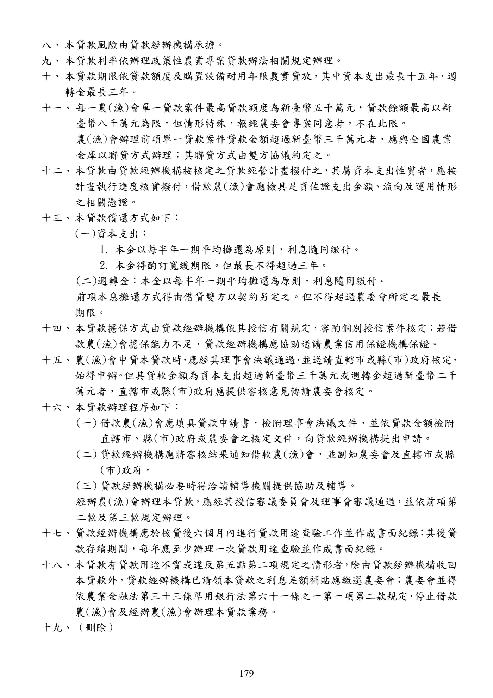
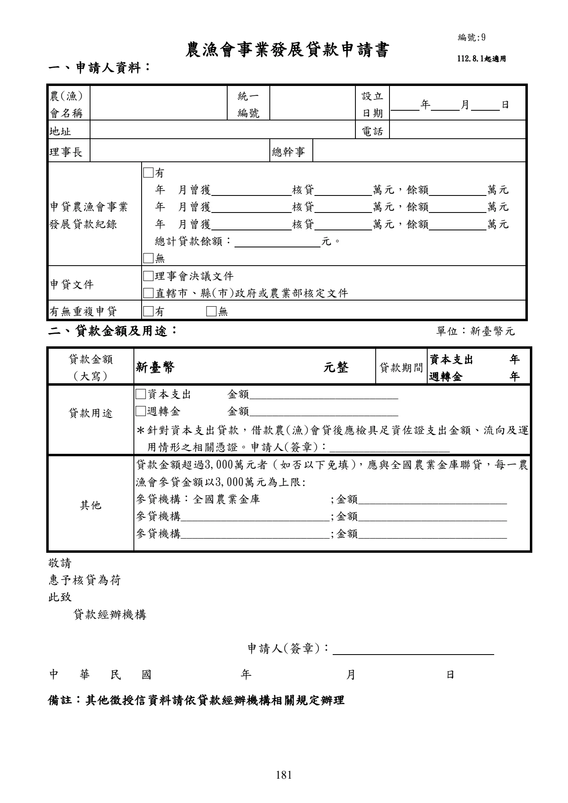
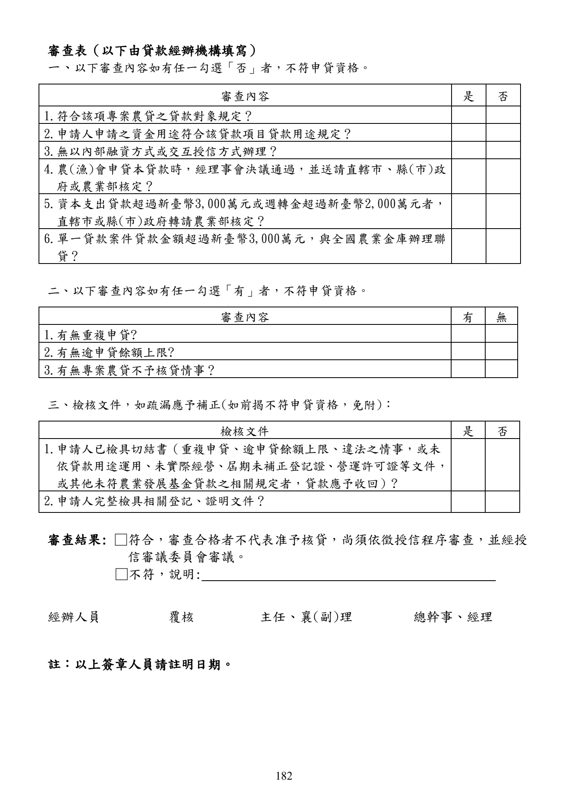

農漁會事業發展貸款
本頁忠實呈現原文，不提供資格摘要、額度摘要、利率摘要或核貸判斷。
手冊頁：178 PDF頁：180／359
農漁會事業發展貸款要點中華民國 91 年 8 月 16 日行政院農業委員會農輔字第 0910050760 號函訂定中華民國 92 年 7 月 15 日行政院農業委員會農輔字第 0920050772 號令修正中華民國 93 年 4 月 30 日行政院農業委員會農授金字第 0935080004 號令修正中華民國 94 年 2 月 22 日行政院農業委員會農授金字第 0945080059 號令修正中華民國 94 年 10 月 17 日行政院農業委員會農授金字第 0945080489 號令修訂第 5 點規定中華民國94 年12 月30 日行政院農業委員會農授金字第0945080617 號令修正中華民國 96 年 12 月 7 日行政院農業委員會農金字第 0965080445 號令修正第 7 點規定，並自 96 年 7 月 1 日生效中華民國 97 年 11 月 5 日行政院農業委員會農金字第 0975080375 號令修正中華民國 98 年 6 月 25 日行政院農業委員會農金字第 0985080320 號令修正中華民國 98 年 7 月 24 日行政院農業委員會農金字第 0985080364 號令修正中華民國 102 年 4 月 26 日行政院農業委員會農金字第 1025080174 號令修正中華民國 105 年 3 月 18 日行政院農業委員會農金字第 1055084021I 號令修正第 7 點、第9 點規定，並自 105 年 3 月 22 日生效
一、行政院農業委員會(以下簡稱農委會)為協助農(漁)會發展事業，提昇競爭能力，以發揮服務農(漁)民之專業功能，特訂定本要點。
二、農漁會事業發展貸款除依辦理政策性農業專案貸款辦法辦理外，依本要點規定辦理。
本要點未規定者，依農業發展基金貸款作業規範及其他有關規定辦理。
三、本貸款之對象為各級農(漁)會。
四、本貸款之用途為促進農(漁)會事業發展、經營管理改善或經農委會核定之促進民間參與公共建設案之資本支出及週轉金。
五、本貸款經辦機構為設有信用部之農(漁)會及全國農業金庫。
本貸款不得以農(漁)會內部融資方式或農(漁)會間交互授信方式辦理。但本貸款申貸案件於本要點中華民國九十八年六月二十五日修正生效前已送達直轄市或縣(市)政府者，不受不得以農(漁)會間交互授信方式辦理之限制。
前項所稱交互授信，指申貸農(漁)會與經辦農(漁)會有下列情形之一者：
(一)申貸農(漁)會貸予經辦農(漁)會本貸款，而經辦農(漁)會於尚未清償前，對申貸農(漁)會貸予本貸款。
(二)申貸農(漁)會對經辦農(漁)會以外之他農(漁)會貸予本貸款，該他農(漁)會又對經辦農(漁)會貸予本貸款，而經辦農(漁)會於前開貸款尚未清償前，對申貸農(漁)會貸予本貸款。
(三)四家以上農(漁)會間有前款接續貸款之情形。
六、本貸款之輔導機關為農委會暨其所屬農業試驗改良場(所)、直轄市及各縣(市)政府。
七、本貸款由貸款經辦機構提供貸款資金，並由農業發展基金就其出資金給予利息差額補貼。
查看PDF原始文字層
農漁會事業發展貸款要點 中華民國 91 年 8 月 16 日行政院農業委員會農輔字第 0910050760 號函訂定 中華民國 92 年 7 月 15 日行政院農業委員會農輔字第 0920050772 號令修正 中華民國 93 年 4 月 30 日行政院農業委員會農授金字第 0935080004 號令修正 中華民國 94 年 2 月 22 日行政院農業委員會農授金字第 0945080059 號令修正 中華民國 94 年 10 月 17 日行政院農業委員會農授金字第 0945080489 號令修訂第 5 點規 定 中華民國94 年12 月30 日行政院農業委員會農授金字第0945080617 號令修正 中華民國 96 年 12 月 7 日行政院農業委員會農金字第 0965080445 號令修正第 7 點規定， 並自 96 年 7 月 1 日生效 中華民國 97 年 11 月 5 日行政院農業委員會農金字第 0975080375 號令修正 中華民國 98 年 6 月 25 日行政院農業委員會農金字第 0985080320 號令修正 中華民國 98 年 7 月 24 日行政院農業委員會農金字第 0985080364 號令修正 中華民國 102 年 4 月 26 日行政院農業委員會農金字第 1025080174 號令修正 中華民國 105 年 3 月 18 日行政院農業委員會農金字第 1055084021I 號令修正第 7 點、第 9 點規定，並自 105 年 3 月 22 日生效 一、 行政院農業委員會(以下簡稱農委會)為協助農(漁)會發展事業 ， 提昇競爭能力 ， 以發 揮服務農(漁)民之專業功能，特訂定本要點。 二、 農漁會事業發展貸款除依辦理政策性農業專案貸款辦法辦理外 ， 依本要點規定辦理。 本要點未規定者，依農業發展基金貸款作業規範及其他有關規定辦理。 三、 本貸款之對象為各級農(漁)會。 四、 本貸款之用途為促進農(漁)會事業發展 、 經營管理改善或經農委會核定之促進民間參 與公共建設案之資本支出及週轉金。 五、 本貸款經辦機構為設有信用部之農(漁)會及全國農業金庫。 本貸款不得以農(漁)會內部融資方式或農(漁)會間交互授信方式辦理 。 但本貸款申貸 案件於本要點中華民國九十八年六月二十五日修正生效前已送達直轄市或縣(市)政 府者，不受不得以農(漁)會間交互授信方式辦理之限制。 前項所稱交互授信，指申貸農(漁)會與經辦農(漁)會有下列情形之一者： (一)申貸農(漁)會貸予經辦農(漁)會本貸款 ， 而經辦農(漁)會於尚未清償前 ， 對申貸 農(漁)會貸予本貸款。 (二)申貸農(漁)會對經辦農(漁)會以外之他農(漁)會貸予本貸款，該他農(漁)會又 對經辦農(漁)會貸予本貸款，而經辦農(漁)會於前開貸款尚未清償前，對申貸 農(漁)會貸予本貸款。 (三)四家以上農(漁)會間有前款接續貸款之情形。 六、 本貸款之輔導機關為農委會暨其所屬農業試驗改良場(所)、 直轄市及各縣(市)政府。 七、 本貸款由貸款經辦機構提供貸款資金 ， 並由農業發展基金就其出資金給予利息差額補 貼。
手冊頁：179 PDF頁：181／359
{kind=link}

展開查看PDF原始文字層
八、 本貸款風險由貸款經辦機構承擔。 九、 本貸款利率依辦理政策性農業專案貸款辦法相關規定辦理。 十、 本貸款期限依貸款額度及購置設備耐用年限覈實貸放 ， 其中資本支出最長十五年 ， 週 轉金最長三年。 十一、 每一農(漁)會單一貸款案件最高貸款額度為新臺幣五千萬元，貸款餘額最高以新 臺幣八千萬元為限。但情形特殊，報經農委會專案同意者，不在此限。 農(漁)會辦理前項單一貸款案件貸款金額超過新臺幣三千萬元者，應與全國農業 金庫以聯貸方式辦理；其聯貸方式由雙方協議約定之。 十二、 本貸款由貸款經辦機構按核定之貸款經營計畫撥付之 ， 其屬資本支出性質者 ， 應按 計畫執行進度核實撥付 ， 借款農(漁)會應檢具足資佐證支出金額 、 流向及運用情形 之相關憑證。 十三、 本貸款償還方式如下： (一)資本支出： 1. 本金以每半年一期平均攤還為原則，利息隨同繳付。 2. 本金得酌訂寬緩期限。但最長不得超過三年。 (二)週轉金：本金以每半年一期平均攤還為原則，利息隨同繳付。 前項本息攤還方式得由借貸雙方以契約另定之。但不得超過農委會所定之最長 期限。 十四、 本貸款擔保方式由貸款經辦機構依其授信有關規定 ， 審酌個別授信案件核定 ； 若借 款農(漁)會擔保能力不足，貸款經辦機構應協助送請農業信用保證機構保證。 十五、 農(漁)會申貸本貸款時 ， 應經其理事會決議通過 ， 並送請直轄市或縣(市)政府核定 ， 始得申辦 。 但其貸款金額為資本支出超過新臺幣三千萬元或週轉金超過新臺幣二千 萬元者，直轄市或縣(市)政府應提供審核意見轉請農委會核定。 十六、 本貸款辦理程序如下： (一) 借款農(漁)會應填具貸款申請書，檢附理事會決議文件，並依貸款金額檢附 直轄市、縣(市)政府或農委會之核定文件，向貸款經辦機構提出申請。 (二) 貸款經辦機構應將審核結果通知借款農(漁)會，並副知農委會及直轄市或縣 (市)政府。 (三) 貸款經辦機構必要時得洽請輔導機關提供協助及輔導。 經辦農(漁)會辦理本貸款 ， 應經其授信審議委員會及理事會審議通過 ， 並依前項第 二款及第三款規定辦理。 十七、 貸款經辦機構應於核貸後六個月內進行貸款用途查驗工作並作成書面紀錄 ； 其後貸 款存續期間，每年應至少辦理一次貸款用途查驗並作成書面紀錄。 十八、 本貸款有貸款用途不實或違反第五點第二項規定之情形者 ， 除由貸款經辦機構收回 本貸款外 ， 貸款經辦機構已請領本貸款之利息差額補貼應繳還農委會 ； 農委會並得 依農業金融法第三十三條準用銀行法第六十一條之一第一項第二款規定 ， 停止借款 農(漁)會及經辦農(漁)會辦理本貸款業務。 十九、 （刪除）
手冊頁：180 PDF頁：182／359
二十、借款農(漁)會應於貸款經辦機構核准貸款日起六個月內動用完畢。
二十一、本貸款申請展延，應由貸款經辦機構報請直轄市、縣（市）政府提供審核意見，轉請農委會核定後始得為之；其資本支出及週轉金貸款之展延，各以一次為限。
但有下列各款情形之一者，不得申請展延：
(一)經辦農(漁)會以內部融資方式辦理本貸款。
(二)經辦農(漁)會以交互授信方式辦理本貸款，且展延之申請於本要點中華民國九十八年六月二十五日修正生效後送達直轄市或縣(市）政府。
本貸款申請展延，不適用農業發展基金貸款作業規範第二十一點規定。
二十二、中國農民銀行、合作金庫銀行、臺灣土地銀行及設有信用部之農(漁)會於本要點修正生效前所承作之貸款案件，依既有條件辦理至原契約到期為止。
查看PDF原始文字層
二十、 借款農(漁)會應於貸款經辦機構核准貸款日起六個月內動用完畢。
二十一、 本貸款申請展延，應由貸款經辦機構報請直轄市、縣（市）政府提供審核意見，
轉請農委會核定後始得為之；其資本支出及週轉金貸款之展延，各以一次為限。
但有下列各款情形之一者，不得申請展延：
(一)經辦農(漁)會以內部融資方式辦理本貸款。
(二)經辦農(漁)會以交互授信方式辦理本貸款 ， 且展延之申請於本要點中華民國
九十八年六月二十五日修正生效後送達直轄市或縣(市）政府。
本貸款申請展延，不適用農業發展基金貸款作業規範第二十一點規定。
二十二、中國農民銀行、合作金庫銀行、臺灣土地銀行及設有信用部之農(漁)會於本要點
修正生效前所承作之貸款案件，依既有條件辦理至原契約到期為止。手冊頁：181 PDF頁：183／359
{kind=link}

展開查看PDF原始文字層
農漁會事業發展貸款申請書
一、申請人資料：
農(漁)
會名稱
統一
編號
設立
日期 年 月 日
地址 電話
理事長 總幹事
申貸農漁會事業
發展貸款紀錄
□有
年 月曾獲 核貸 萬元，餘額 萬元
年 月曾獲 核貸 萬元，餘額 萬元
年 月曾獲 核貸 萬元，餘額 萬元
總計貸款餘額： 元。
□無
申貸文件 □理事會決議文件
□直轄市、縣(市)政府或農業部核定文件
有無重複申貸 □有 □無
二、貸款金額及用途： 單位：新臺幣元
貸款金額
(大寫) 新臺幣 元整 貸款期間 資本支出 年
週轉金 年
貸款用途
□資本支出 金額__________________________
□週轉金 金額__________________________
＊針對資本支出貸款，借款農(漁)會貸後應檢具足資佐證支出金額、流向及運
用情形之相關憑證。申請人(簽章)：_____________________
其他
貸款金額超過3,000萬元者（如否以下免填） ，應與全國農業金庫聯貸，每一農
漁會參貸金額以3,000萬元為上限:
參貸機構：全國農業金庫 ;金額__________________________
參貸機構__________________________;金額__________________________
參貸機構__________________________;金額__________________________
敬請
惠予核貸為荷
此致
貸款經辦機構
申請人(簽章)：
中 華 民 國 年 月 日
備註：其他徵授信資料請依貸款經辦機構相關規定辦理
112.8.1起適用
編號:9手冊頁：182 PDF頁：184／359
{kind=link}

展開查看PDF原始文字層
審查表（以下由貸款經辦機構填寫） 一、以下審查內容如有任一勾選「否」者，不符申貸資格。 審查內容 是 否 1.符合該項專案農貸之貸款對象規定？ 2.申請人申請之資金用途符合該貸款項目貸款用途規定？ 3.無以內部融資方式或交互授信方式辦理？ 4.農(漁)會申貸本貸款時，經理事會決議通過，並送請直轄市、縣 (市)政 府或農業部核定？ 5.資本支出貸款超過新臺幣3,000萬元或週轉金超過新臺幣2,000萬元者， 直轄市或縣(市)政府轉請農業部核定？ 6.單一貸款案件貸款金額超過新臺幣 3,000萬元，與全國農業金庫辦理聯 貸？ 二、以下審查內容如有任一勾選「有」者，不符申貸資格。 審查內容 有 無 1.有無重複申貸? 2.有無逾申貸餘額上限? 3.有無專案農貸不予核貸情事？ 三、檢核文件，如疏漏應予補正(如前揭不符申貸資格，免附)： 檢核文件 是 否 1.申請人已檢具切結書（重複申貸、逾申貸餘額上限、違法之情事，或未 依貸款用途運用、未實際經營、屆期未補正登記證、營運許可證等文件， 或其他未符農業發展基金貸款之相關規定者，貸款應予收回）? 2.申請人完整檢具相關登記、證明文件？ 審查結果: □符合，審查合格者不代表准予核貸，尚須依徵授信程序審查，並經授 信審議委員會審議。 □不符，說明: 經辦人員 覆核 主任、襄(副)理 總幹事、經理 註：以上簽章人員請註明日期。
手冊頁：183 PDF頁：185／359
函令摘要：「農漁會事業發展貸款要點」第21 點有關申請展延規定【行政院農業委員會97年11月13日 農授金字第0975080401號函】主旨：「農漁會事業發展貸款要點」第21點有關申請展延規定，補充如說明二、三，請查照。
說明：
一、申請本貸款之展延，應由貸款經辦機構核轉本會核定。
二、借款農（漁）會向原貸款經辦機構提出本貸款展延申請時，應具體說明其貸款現況及申請展延之原因，包括計畫執行情形、還款狀況、貸款餘額及還款困難事由，並檢附下列資料，俾利審核：
（一）本貸款前經本會或直轄市、縣（市）政府核定文件及計畫書。
（二）最近1年經濟事業報告及經濟事業損益決算。
（三）展延期間需求及償還計畫。
三、經辦農（漁）會受理本貸款展延案件，經審查後循行政程序報請直轄市、縣（市）政府核轉本會核定。
函令摘要：有關申請「農漁會事業發展貸款」展延案疑義【行政院農業委員會98年3月25日 農授金字第0985080132號函】主旨：有關申請農漁會事業發展貸款展延案，請依說明辦理，請查照。
說明：
一、依旨揭貸款要點第21點規定，本貸款申請展延，應由貸款經辦機構核轉本會核定。為利農（漁）會申辦作業，提高審核效率，本會業於 97年11月13日以農授金字第0975080401號函（諒達）補充說明申請展延應檢附文件及資料等事宜，合先敘明。
二、本貸款展延案件對於原授信約定之期限已有變更，為期審慎，該展延案應經借、貸雙方之理事會決議通過。嗣後經辦之農（漁）會辦理本貸款展延案件，應檢附借、貸雙方理事會有關本展延案決議通過之會議紀錄，併前開應檢附文件及資料，循行政程序報請直轄市、縣（市）政府核轉本會核定。
查看PDF原始文字層
函令摘要： 「農漁會事業發展貸款要點」第21 點有關申請展延規定 【行政院農業委員會97年11月13日 農授金字第0975080401號函】 主旨：「農漁會事業發展貸款要點」第21點有關申請展延規定，補充如說明二、三，請查 照。 說明： 一、申請本貸款之展延，應由貸款經辦機構核轉本會核定。 二、借款農（漁）會向原貸款經辦機構提出本貸款展延申請時，應具體說明其貸款現況及 申請展延之原因，包括計畫執行情形、還款狀況、貸款餘額及還款困難事由，並檢附 下列資料，俾利審核： （一）本貸款前經本會或直轄市、縣（市）政府核定文件及計畫書。 （二）最近1年經濟事業報告及經濟事業損益決算。 （三）展延期間需求及償還計畫。 三、經辦農（漁）會受理本貸款展延案件，經審查後循行政程序報請直轄市、縣（市）政 府核轉本會核定。 函令摘要：有關申請「農漁會事業發展貸款」展延案疑義 【行政院農業委員會98年3月25日 農授金字第0985080132號函】 主旨：有關申請農漁會事業發展貸款展延案，請依說明辦理，請查照。 說明： 一、依旨揭貸款要點第21點規定，本貸款申請展延，應由貸款經辦機構核轉本會核定。為 利農（漁）會申辦作業，提高審核效率，本會業於 97年11月13日以農授金字第 0975080401號函（諒達）補充說明申請展延應檢附文件及資料等事宜，合先敘明。 二、本貸款展延案件對於原授信約定之期限已有變更，為期審慎，該展延案應經借、貸雙 方之理事會決議通過。嗣後經辦之農（漁）會辦理本貸款展延案件，應檢附借、貸雙 方理事會有關本展延案決議通過之會議紀錄，併前開應檢附文件及資料，循行政程序 報請直轄市、縣（市）政府核轉本會核定。
手冊頁：184 PDF頁：186／359
函令摘要：有關「農漁會事業發展貸款」可否用於農（漁）會重設信用部之事業資金疑義【行政院農業委員會98年4月8日 農授金字第0980117936號函】主旨：有關「農漁會事業發展貸款」可否用於農（漁）會重設信用部之事業資金疑義，復如說明，請查照。
說明：
一、復貴府98年3月26日府農輔字第0980091922號函。
二、農(漁)會信用部事業資金係屬淨值性質，應以農（漁）會自有資金籌措；旨揭貸款之用途為促進農(漁)會事業發展、經營管理改善或經本會核定之促進民間參與公共建設案之資本支出及週轉金，不含撥充農（漁）會重設信用部之事業資金用途。
函令摘要：「農漁會事業發展貸款」要點第15點有關縣（市）政府應如何核定貸款釋義案【行政院農業委員會98年4月15日 農授金字第098508186號函】主旨：關於所詢縣（市）政府應如何核定農漁會事業發展貸款案，復如說明，請查照。
說明：
一、復貴府 98 年 4 月 6 日府農輔字第 098006637lA 號函。
二、依「農漁會事業發展貸款要點」第 15 點規定，農（漁）會申貸本貸款時，應經其理事會決議通過，並將其貸款計畫書送請直轄市或縣（市）政府核定或核轉本會。各縣（市）政府應就該計畫是否符合農業施政方向及該農（漁）會業務發展需要、資金用途及需求是否符合實際、該計畫之可行性等事項進行審核，如超過貸款金額須核轉本會者，並應提供初審意見。
函令摘要：釋示「農漁會事業發展貸款要點」第11點第2項規定有關聯貸金額疑義案【行政院農業委員會105年6月15日 農授金字第1055011287A號函】主旨：「農漁會事業發展貸款要點」第11點第2項規定有關聯貸金額疑義，釋示如說明二，請查照。
說明：
一、旨揭要點第11點第2項規定，農（漁）會辦理單一貸款案件貸款金額超過新臺幣3千萬元者，應與全國農業金庫以聯貸方式辦理。
二、旨揭貸款以聯貸方式辦理者，單一農（漁）會最高承作金額為3千萬元，但情形特殊，報經本會專案同意者，不在此限。參貸農（漁）會合計承作金額、相關管理程序及費用，由主辦及參貸機構協議約定之。
三、本會105年3月10日 農授金字第1055010481A號函停止適用。
查看PDF原始文字層
函令摘要：有關「農漁會事業發展貸款」可否用於農（漁）會重設信用 部之事業資金疑義 【行政院農業委員會98年4月8日 農授金字第0980117936號函】 主旨：有關「農漁會事業發展貸款」可否用於農（漁）會重設信用部之事業資金疑義，復 如說明，請查照。 說明： 一、復貴府98年3月26日府農輔字第0980091922號函。 二、農(漁)會信用部事業資金係屬淨值性質，應以農（漁）會自有資金籌措；旨揭貸款之 用途為促進農(漁)會事業發展 、 經營管理改善或經本會核定之促進民間參與公共建設 案之資本支出及週轉金，不含撥充農（漁）會重設信用部之事業資金用途。 函令摘要： 「農漁會事業發展貸款」要點第15點有關縣（市）政府應如何 核定貸款釋義案 【行政院農業委員會98年4月15日 農授金字第098508186號函】 主旨：關於所詢縣（市）政府應如何核定農漁會事業發展貸款案，復如說明，請查照。 說明： 一、 復貴府 98 年 4 月 6 日府農輔字第 098006637lA 號函。 二、 依「農漁會事業發展貸款要點」第 15 點規定，農（漁）會申貸本貸款時，應經其理 事會決議通過，並將其貸款計畫書送請直轄市或縣 （市） 政府核定或核轉本會。各縣 （市） 政府應就該計畫是否符合農業施政方向及該農 （漁） 會業務發展需要、資金用 途及需求是否符合實際 、 該計畫之可行性等事項進行審核 ， 如超過貸款金額須核轉本 會者，並應提供初審意見。 函令摘要：釋示「農漁會事業發展貸款要點」第11點第2項規定有關聯貸 金額疑義案 【行政院農業委員會105年6月15日 農授金字第1055011287A號函】 主旨： 「農漁會事業發展貸款要點」 第11點第2項規定有關聯貸金額疑義， 釋示如說明二， 請查照。 說明： 一、 旨揭要點第11點第2項規定，農 （漁） 會辦理單一貸款案件貸款金額超過新臺幣3千萬 元者，應與全國農業金庫以聯貸方式辦理。 二、 旨揭貸款以聯貸方式辦理者 ， 單一農 （漁） 會最高承作金額為3千萬元， 但情形特殊， 報經本會專案同意者，不在此限。參貸農（漁）會合計承作金額、相關管理程序及費 用，由主辦及參貸機構協議約定之。 三、 本會105年3月10日 農授金字第1055010481A號函停止適用。